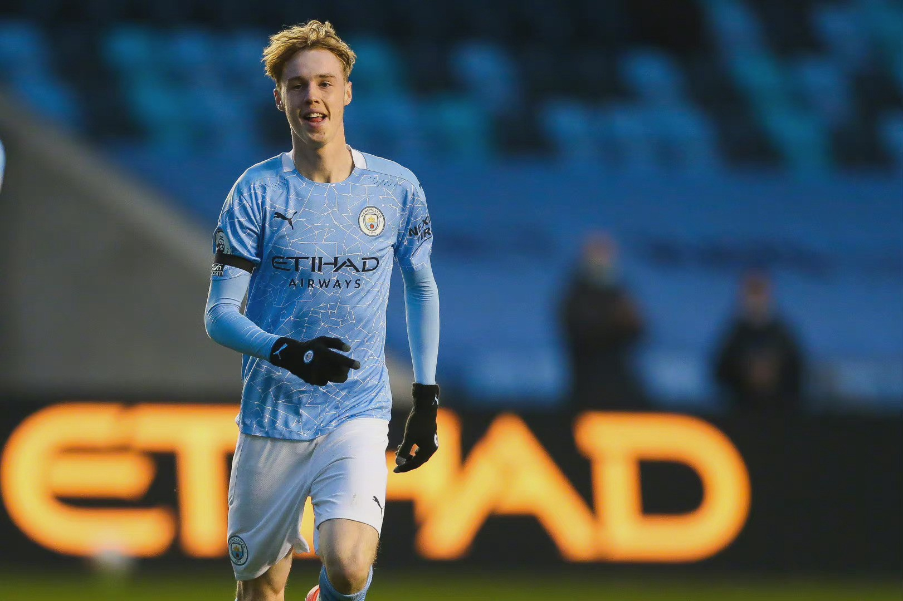

Manchester City Football Team
Manchester City Football Team
|
||||
| 首页 | 队员 | 历史 | 荣誉奖项 | 青训成果 |
|
||||
|---|---|---|---|---|
| 曼城拥有全英超最完备的青训体系，最大力的青训投资，因此培养出了桑乔，福登，帕尔默等优秀青年球员。 |
| 菲尔·福登（Phil Foden）司职前锋/前腰 身价1.5亿欧元 | |
| 福登的近距离控球能力，以及在禁区内的盘球能力和传球能力都与保罗·加斯科因十分相似；福登的速度很快，同时身体也很强壮，能够应对对方防守者的挑战；这意味着福登拥有英格兰人的身体素质和力量，以及用“西班牙方式”踢足球的能力。 福登在球场上总能展现出优秀球员所具备的自信和气势；其场上的视野广阔，可以为队友送出精准的点位球，甚至在自己面对后卫防守时，为自己创造出很好的射门机会。 |
|
| 科尔·帕尔默（Cole Palmer） 司职前腰/前锋 身价9000万欧元 | |
| 帕尔默平衡、强壮、步伐敏捷、善于利用身体持球，他的身体素质为他提供了一个很好的平台来使用他的快速脚步，因为他出色地应对挑战，用他的手臂阻止挑战者，并且可以超越肌肉敌人尤其如此。 |  |
| 杰登·桑乔（Jadon Sancho） 司职边锋 身价3000万欧元 | |
| 作为边锋，桑乔不会因高大的身材而限制本身的速度和带球频率，这是他最明显的优点之一。桑乔拥有非常快的触球频率，平衡的左右脚能力，不惧对抗的勇敢精神，而且在高速下还能稳定让球保持着精准的距离和方向，这些技术特点会让任何一个面对他的后卫防守时无从下脚。作为前锋，尽管桑乔在门前的选择上会更倾向于传球给队友，但是一旦自己有机会的话也绝对不会含糊。 | .jpg) |